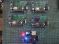

Radio, electrónica y experimentación
Soy José Antonio Castañeda Audiffred, XE3JAC. Soy Licenciado en Informática y Maestro en Migración de Sistemas Computacionales. Mi estación es también un laboratorio donde conviven radiofrecuencia, software, redes, electrónica, microcontroladores y fabricación digital.
Formación
Licenciado en Informática.
Maestro en Migración de Sistemas Computacionales.
Comunidades
Federación Mexicana de Radio Experimentadores
Alfa Delta DX Group — 10AD1986
HamSphere — XE3JAC

Una estación que nunca deja de evolucionar
El shack ha cambiado a través de los años incorporando equipos HF/VHF/UHF, nodos digitales, servidores de radio, receptores SDR, proyectos APRS y herramientas de electrónica e impresión 3D.
Más que una colección de radios, es un espacio para experimentar, reparar, construir y aprender.
Proyectos y tecnologías
APRS / WX / Indy Open APRS
Implementaciones APRS en VHF y LoRa, estaciones meteorológicas e iGate. Indy Open APRS continúa esta línea con una plataforma abierta y documentada.
DMR · NXDN · EchoLink · AllStarLink
.jpg)
Experimentación con modos digitales e integración entre radio y redes IP, incluyendo infraestructura UHF en el área de Cuautlancingo, Puebla.
DAPNET

Recepción de mensajes al estilo de los beepers de los años 80 mediante la red DAPNET para radioaficionados.
SDR · TinyGS · OpenWebRX+
.jpg)
Recepción y experimentación con RTL-SDR, TinyGS, OpenWebRX+ y sistemas basados en Raspberry Pi.
Electrónica y restauración
.jpg)
Restauración de radios, modificaciones y construcción de interfaces, incluida una interfaz IF-10 desarrollada desde cero para el Kenwood TS-140S.
Impresión 3D

Diseño y fabricación de cajas, soportes y accesorios para radio y electrónica.
Drake TR-4C / RV-4C

El conjunto Drake TR-4C y RV-4C perteneció a XE3Z — José Antonio Castañeda Melgoza. Hoy forma parte de mi estación y representa mucho más que un equipo clásico: conserva una parte de la historia familiar dentro de la radioafición.
POTA, antenas y energía
Entre los proyectos portátiles se encuentran Battery Box, antenas End Fed para 10, 15, 20 y 40 metros y adaptaciones de alimentación para equipos como el Icom IC-7300 y Kenwood TS-140S.

Construir para operar
Parte del atractivo de la radio está en preparar nuestras propias soluciones para salir al aire, experimentar y mejorar cada montaje.
Galería XE3JAC
Fotografías recuperadas de la biografía y proyectos de XE3JAC. Esta galería conserva tanto proyectos recientes como parte de la evolución histórica del shack.


.png)


.png)
.png)



.png)


.jpg)
.jpg)


.jpg)
.jpg)

.jpg)
.jpg)
.jpg)